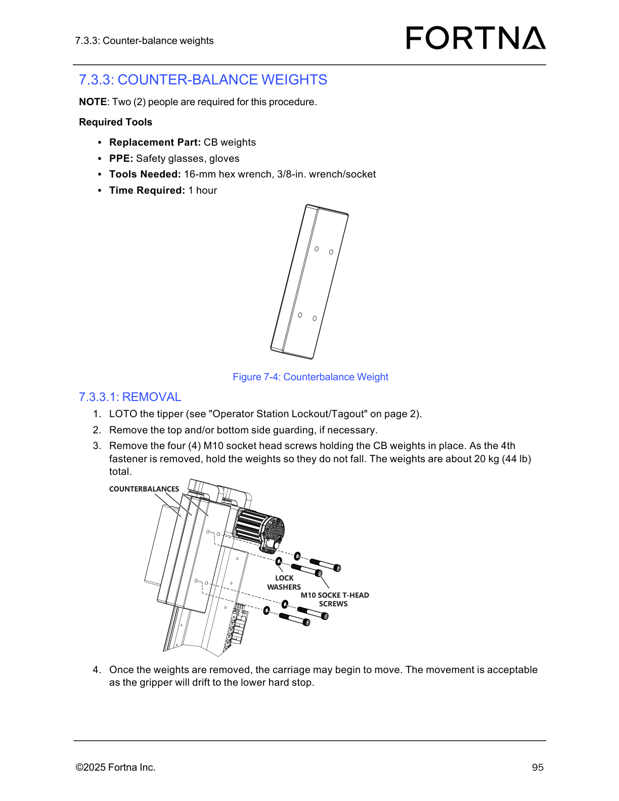

| Procedure ID | proc_remove_cb_weights_from_optiSweep_tipper_carriage_v1 |
|---|---|
| Title | Remove Counter-balance (CB) Weights From OptiSweep Tipper Carriage |
| Procedure Type | recovery |
| Primary Role | operator |
| Support Safe | Yes |
| Capability Tags | tipper_station_fault |
| Access Surface | physical_floor |
| Audience Roles | operator |
| Failure Pattern Tags | None |
| Validation Status | needs_sme_review |
| Merge Status | source_finalized |
Use a two-person, LOTO-protected mechanical procedure to remove the counter-balance (CB) weight assembly from the OptiSweep tipper carriage by removing four M10 socket head screws while supporting the ~20 kg weights during the final fastener removal, then allow the carriage/gripper to drift to the lower hard stop.
When you need to remove the OptiSweep tipper counter-balance (CB) weight assembly (CB weights) from the tipper carriage using the documented LOTO and fastener removal steps.

Responsible role: operator
Instruction:
Before approaching the OptiSweep tipper carriage, confirm you have two people available and the required PPE/tools: safety glasses, gloves; 16-mm hex wrench; 3/8-in. wrench/socket; and the replacement part CB weights.
Expected result:
Two people are available and the required PPE/tools are ready for use at the tipper carriage.
Stop or Escalate If:
Responsible role: operator
Instruction:
LOTO the tipper using the manual reference "Operator Station Lockout/Tagout" (page 2).
Expected result:
The tipper is LOTO-protected prior to removing the CB weight fasteners.
Stop or Escalate If:
Responsible role: operator
Instruction:
Remove the top and/or bottom side guarding, if necessary, to access the CB weights.
Expected result:
CB weights mounting area is accessible for locating and removing the four M10 socket head screws.
Stop or Escalate If:
Responsible role: operator
Instruction:
Locate the four (4) M10 socket head screws holding the CB weights in place (including lock washers and counterbalance plates as shown in Figure 7-4).
Expected result:
All four M10 socket head screws are identified and reachable for removal.
Stop or Escalate If:
Responsible role: operator
Instruction:
Remove the four (4) M10 socket head screws holding the CB weights in place. As you remove the 4th (last) fastener, hold the weights so they do not fall. The weights are about 20 kg (44 lb) total.
Expected result:
The CB weights are removed without dropping during removal of the 4th (last) fastener.
Stop or Escalate If:
Responsible role: operator
Instruction:
After the weights are removed, observe the carriage movement. Movement is acceptable because the gripper will drift to the lower hard stop.
Expected result:
After CB weights removal, the carriage/gripper drifts to the lower hard stop.
Stop or Escalate If: